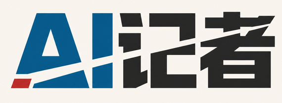
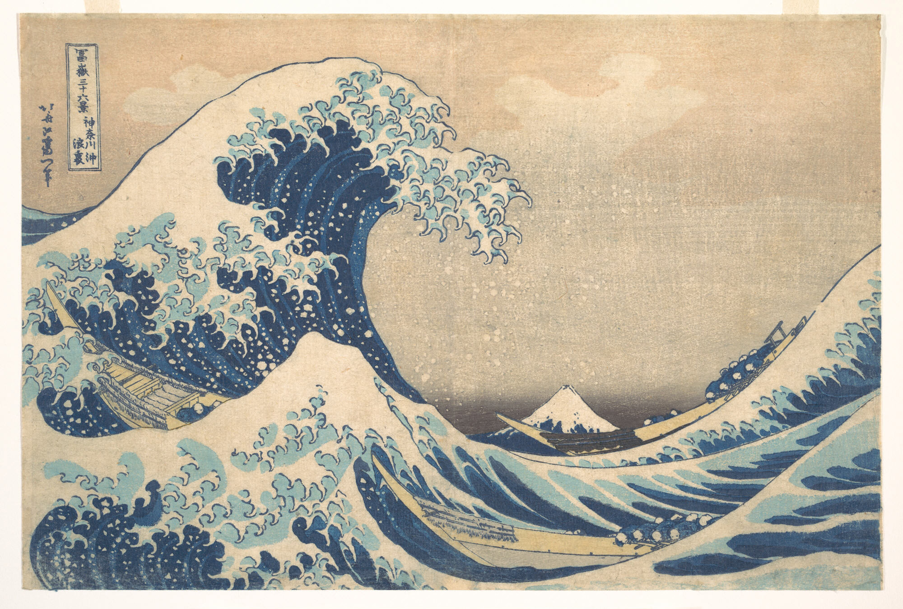

{kind=link}
主版線
墨の輪郭が、複雑な画面でも波、舟、富士を明確に保つ。

KINPEKI UKIYO CHART VOCABULARY · V1.0
狩野派の金碧屏風が空間の秩序を、浮世絵の多色木版が図形の文法を与える。九つの情報関係と67種類の図表で、様式をデータ判断に従わせる。

ORIGINAL PRINT · PUBLIC DOMAIN
葛飾北斎『神奈川沖浪裏』、1830～32年頃、多色木版画。メトロポリタン美術館蔵、JP2972。The Met Open AccessによるPublic Domain画像。 The Met
墨の輪郭が、複雑な画面でも波、舟、富士を明確に保つ。
限られた藍の濃淡が、無数の色相に頼らず奥行きと力をつくる。
波頭、舟、山体が方向をつくり、視線の経路を明確にする。
空と波の内側の余白が、富士を安定した視覚の錨にする。
A CONTEMPORARY SYNTHESIS
金は継ぎ目、見出し、基準だけに使い、胡粉紙の描画域を静かに保つ。
塗りのあるマークにも墨の輪郭を残し、軸・基線・参照線を同じ線体系にそろえる。
新摺のベロ藍を主データ、鮮朱を焦点に限定し、多カテゴリでも五色を上限とする。
切り込み、印、屏風の継ぎ目は描画域の外に置き、長さ、面積、線幅、地図位置を正確に保つ。
NEW-IMPRESSION HIGH-CHROMA PALETTE
#FBF3DE#181A1B#0069A6#E24832#3A8A5C#E2A228#8D4B8E#E0B53A#C8B990単系列はベロ藍一色を優先し、二項比較は非中性色を二色までにする。鮮色はデータ図形に使い、小さな文字には同系の濃色を使う。カテゴリ識別が重要な場合だけ五色まで使い、マーク内のグラデーションは禁止。
9 FAMILIES · 67 EDITABLE SVGS
すべての例に墨の主版線を残す。複数系列の線は線種も変え、塗りの図形は輪郭または直接ラベルを持つため、グレースケールでも構造が読める。
USE WITH ATTRIBUTION · BRAND RESERVED
コードHTML、CSS、JSON、ビルドスクリプトはMIT License。
デザインポスター、SVG図表、文書はCC BY 4.0。表示を付けて改変・再配布できる。
原作『神奈川沖浪裏』参照画像はPublic Domain。作品名と出典を保持する。
ブランドAI記者の名称とロゴはオープンライセンスに含まれず、提携を示唆できない。